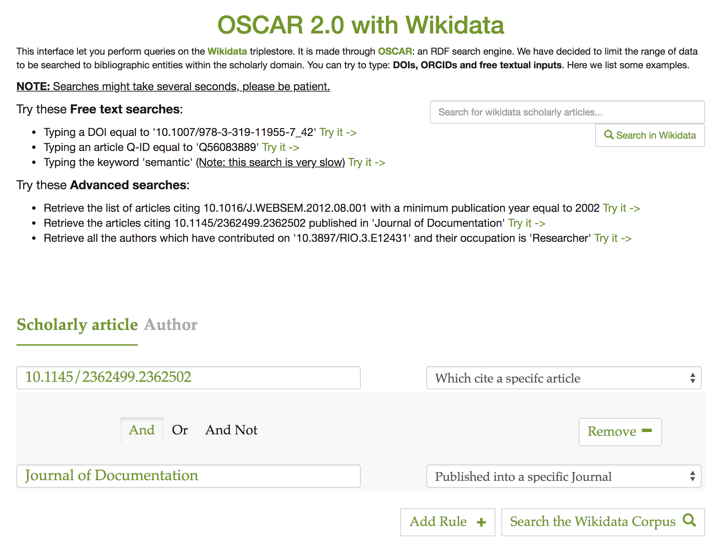
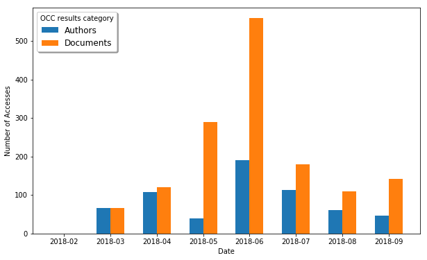

In this paper we introduce the latest version (Version 2.0) of OSCAR, the OpenCitations RDF Search Application, which has several improved features and extends the query workflow comparing with the previous version (Version 1.0) that we presented at the workshop entitled Semantics, Analytics, Visualisation: Enhancing Scholarly Dissemination (SAVE-SD 2018), held in conjunction with The Web Conference 2018. OSCAR is a user-friendly search platform that can be used to search any RDF triplestore providing a SPARQL endpoint, while hiding the complexities of SPARQL, thus making the search operations accessible to those who are not experts in Semantic Web technologies. We present here the basic features and the main extensions of this latest version of OSCAR. In addition, we demonstrate how it can be adapted to work with different SPARQL endpoints containing scholarly data, using as examples the OpenCitations Corpus (OCC) and the OpenCitations Index of Crossref open DOI-to-DOI citations (COCI), both provided by OpenCitations, and also the Wikidata dataset provided by the Wikimedia Foundation. We conclude by reporting the usage statistics of OSCAR, retrieved from the OpenCitations website logs, so as to demonstrate its uptake.
Introduction
The amount of data available on the World Wide Web (the Web) is increasing rapidly, and finding relevant information by searching the Web is a daily challenge. Traditional search techniques rely on a textual matching of words and do not take into consideration the semantic information behind the textual content. The Semantic Web is an approach which attempts to overcome these limitations by representing knowledge on the World Wide Web in a way that can be interpreted by machines. In particular, these data are expressed by means of RDF , a data model that enables one to define information in the form of machine-readable subject-predicate-object statements. Usually, these RDF statements are stored in a particular kind of RDF database called triplestore, which can be queried by means of SPARQL , the query language for RDF data.
SPARQL is a very powerful query language that can be used to look for data that follow specific patterns. When institutions such as the British Library and the British Museum, and projects such as Wikidata and DBpedia, want to make available their RDF data to the public, they usually provide a specialised Web interface to a SPARQL endpoint of their triplestore, so as to enable users to conduct programmatic searches for particular information, which is returned in one or more formats (usually HTML, XML, JSON and CSV). However, this SPARQL query language is quite complex to learn and is normally usable only by experts in Semantic Web technologies, remaining completely obscure to ordinary Web users.
In order to make such SPARQL endpoints usable by a broader audience, without obliging such users to become experts in Semantic Web technology, we have developed OSCAR, the OpenCitations RDF Search Application, previously described at the SAVE-SD 2018 Workshop (co-located with The Web Conference 2018) . OSCAR is a user-friendly search platform that can be used with any RDF triplestore providing a SPARQL endpoint, and which is entirely built without the need for integration of external application components. It provides a configurable mechanism that allows one to query a triplestore by means of a textual user input following definable rules, while in the background one or more SPARQL queries elaborate the user requests. The main idea is that Semantic Web experts need only be employed in the initial configuration of the system to work with a particular triplestore, by customizing a particular configuration file that provides the text-search interface and that then enables any user to query and filter the results returned by the underlying SPARQL queries by means of appropriate facets and parameters.
The development of OSCAR is one of the outcomes of the OpenCitations Enhancement Project, funded by the Alfred P. Sloan Foundation and run by OpenCitations. One of the main aims of OpenCitations is to build open repositories of scholarly citation data with accurate citation information (bibliographic references) harvested from the scholarly literature. Currently, OpenCitations provides two different datasets, i.e. the OCC (the OpenCitations Corpus) and COCI (the OpenCitations Index of Crossref open DOI-to-DOI citations). These datasets are provided in RDF format and available for querying via two separate SPARQL endpoints. OSCAR was successfully configured and integrated inside the OpenCitations website so as to enable searches on these datasets, thus permitting ordinary Web users to compose and obtain responses to simple textual queries.
The original version of OSCAR (Version 1.0), described in , was able to accept free-text queries that were analysed so as to understand the user intent, and then executed in the background by employing the appropriate SPARQL query. Since then, we have developed new features in response to users needs and the outcomes of the usability studies described in . This paper reports these new features, made possible by additions of the OSCAR architecture. Specifically:
Users now have the ability, using an advanced query interface, to create multiple field queries and to combine them using logical connectors. For example, it is possible to query for articles published in 2015 that have ‘John Michael’ as one of the authors. The logical connectors available are AND, OR, and AND NOT, as in existing approaches for building such complex queries, such as that implemented in Scopus.
A set of preprocessing functions are available that can be applied to the initial input in order to modify its form, so as to make it suitable for use within the specified SPARQL queries – e.g. provide the lowercase version of the input DOI.
The table of results returned by a SPARQL query is extended, with new columns containing additional data retrieved by calling external services, such as REST APIs.
Users can specify conversion rules, which are employed to modify the values in the results table into formats more appropriate for visualisation purposes – e.g. an ISO date such as 2018-11-27 can be presented as 27 November 2018.
The organisation of the configuration file that has to be created to customise OSCAR for a particular SPARQL endpoint has been restructured into a more intuitive and comprehensible form. In addition, the customization of additional stylistic and filtering features are enabled.
To demonstrate the current usage of OSCAR, and its reusability in contexts different from the one for which had been developed (i.e. searching the OpenCitations Corpus), we have analysed the traffic log of its use on the OpenCitations databases, and we demonstrate a configuration of an OSCAR instance that works the Wikidata SPARQL endpoint . Although our focus is on the scholarly domain, from which we take our examples of SPARQL endpoints to query, we would like to stress the fact that OSCAR is fully customizable to any domain and applicable for SPARQL endpoints of RDF triplestores containing other types of data.
The rest of the article is organized as follows. In , we describe some of the most important existing SPARQL-based searching tools. In , we describe OSCAR and discuss its model definition and architectural form, with a special focus on the new features introduced in Version 2.0. In , we demonstrate its use with two OpenCitations datasets (COCI and OCC) and with Wikidata, while, in , we give some statistics about its use within OpenCitations. Finally, in , we conclude the article and sketch out some future works.
Related works
In the past, several projects that allow the customisation of SPARQL queries according to user needs have been presented. They can be classified into two categories. The first generate and apply SPARQL queries starting from a free text or a form-based input search, hiding the complexities of the SPARQL query behind a simple and familiar-looking search interface. We say that these interfaces are 'unaware-user' tools since they permit users to make textual queries without needing to understand the complexity of the Semantic Web languages used for storing and querying the data.
Scholia is such a tool. It is a Web application to expose scientific bibliographic information through Wikidata. In particular, its Web service creates on-the-fly scholarly profiles for researchers, organizations, journals, publishers, individual scholarly works, and research topics, by querying the SPARQL-based Wikidata Query Service. A search field on the front page of Wikidata permits a user to look for a particular name and displays its data by means of well-structured visual interfaces.
Another tool of this type is BioCarian . This is an efficient and user-friendly search engine for performing exploratory searches on biological databases, providing an interface for SPARQL queries over RDF triplestores, and providing a graphical interface for the results based on facets. It allows complex queries to be constructed and has additional features like filtering and ranking the results according to user-selected facet values.
A further striking example of this category of tools, fully customisability by users wishing to define a user-friendly SPARQL query service on their datasets, is Elda, the Epimorphics implementation of the Linked Data API. ELDA is a Java implementation of the Linked Data API, that provides a configurable way to create an API to access RDF datasets using simple RESTful URLs. These URLs are mapped into the corresponding SPARQL queries to be executed on the defined SPARQL endpoints. It can be configured into a web application that permits users to access and view the data easily through a web browser.
OSCAR, of course, is a further member of this category of 'unaware-user' tools.
The other category refers to tools that aim at helping the user to build a SPARQL query by using specific visual constructs that mimic the various operations made available by SPARQL (filters, values selections, etc.). In this case, the users are very aware that they are using Semantic Web technologies, and the function of these tools is only to guide the user in creating the query of interest. These tools are grouped under the label 'aware-user' tools.
Within this category, we have the Wikidata Query Service (WDQS) , which is a Web interface that enables the creation of a SPARQL query by writing the actual label associated to each item and property, instead of employing the URL customarily used for identifying it. In addition, it makes available several visualisation interfaces for the results, from a simple table to very complex diagrams and graphs. The strategy adopted in WDQS is close to that proposed by two other tools: NITELIGHT , a Graphical Tool for Semantic Query Construction, and YASGUI (Yet Another SPARQL GUI). YASGUI does not actually offer the possibility of building the SPARQL query graphically, nor does it translate the SPARQL query in any graphical representation. However, an important feature of YASGUI is that it provides the automatic completion of the query at real time.
ViziQuer is another tool which extracts and visualizes graphically the data schema of the endpoint. The user is then able to overview the data schema and use the understanding gained to construct a SPARQL query according to that schema.
Along the same lines is Visual SPARQL Builder (VSB), a tool which allows users to create and run SPARQL queries with a browser's graphical interface. While WDQS exposes the SPARQL query to the user, VSB hides it entirely behind blocks which explicitly represent all the SPARQL constructs, including filters. Upon execution, the visual queries are translated to SPARQL code, which is made accessible to the user, and the results are shown in structured tables.
Tools comparison
Here we compare these aforementioned tools with OSCAR. The comparison is based on a set of relevant features common to SPARQL-based searching engines. The chosen features are based on our personal observations of the related tools and of OSCAR usage. lists the selected features and provides a brief description of each one.
Feature
Description
Searching options
The type of actions available in the tool interface to let users query the RDF dataset
Dataset
The type of datasets the tool handles
Pre-processing
The set of operations the tool performs before the SPARQL query execution
Post-processing
The set of operations the tool performs after the SPARQL query execution, these operations taking effect on the retrieved SPARQL query results
Filtering options
The filters that can be applied to the results from the tool interface
View and edit the SPARQL query
Indicates that it is possible to preview the SPARQL query and edit it manually
Statistics and performances of the executed Query
Indicates that the tool calculates and shows statistics regarding the SPARQL query execution (e.g. time of execution)
Layout
The way results are represented and shown
Presentation
The set of available operations to alter the graphical presentation of the results
Export data
Whether is possible to export the shown results, the data-format will also be specified
Customisability
The options the tool guarantee to let users customize it to there own needs and usage through one or more configuration file
Programming language
The programming language used to develop the tool
A brief description of the features used to compare the tools mentioned in the previous section. These features cover important common aspects of SPARQL-based search engines.
Taking into consideration these features, we have built a comparison table, shown in , illustrating how each tool rates for these features. OSCAR is included, although detailed descriptions of all its properties are given later in this paper. The tools having a green background indicate the 'unaware-user' tools: applications that let users query the dataset without explicit knowledge of the SPARQL query, using instead simple textual values as input. The tools with yellow background indicate the 'aware-user' tools: applications that let users edit a shown SPARQL query directly, in some cases with the assistance of visual constructs and graphical instruments provided by the tool.
From the data presented in , we notice that ELDA is the closest tool to OSCAR. The main difference is regarding the ‘Post operations’. In OSCAR we wanted to let the adopter permit additional customizable actions over the results retrieved from the SPARQL query execution. We achieve this by combining SPARQL with Javascript to build a more powerful mechanism to control the display of the final results generated in response to the SPARQL query. On the other hand, ELDA upstages OSCAR in supporting the customization of the SPARQL query and presenting query execution statistics.
When looking at the ‘Layout’ feature, we can see that Scholia is the one that offers the greatest number of graphical presentations, these visual representations being generated by the integration of the WDQS components. While the main purpose of OSCAR is for searching a triplestore and presenting a list of the items matching the search criteria, the additional activity of browsing the resources is the function of a separate additional application we have created, called LUCINDA. LUCINDA is compatible with and integrates with OSCAR, but is separate from it.
From the listed tools, there are only three (including OSCAR) which can be customized and redefined according to personal needs. Of these, only OSCAR and ELDA provide a customizable configuration for the generated GUI.
Of those 'aware-user' tools (with yellow background), where the user acts explicitly on the SPARQL queries, few permit any pre/post query operations. The common approach is to work directly on the SPARQL query, by helping users build queries that satisfy their needs, without additional post-processing. The fact that they don’t have any pre-processing operation is due to the fact that users have full control of the values inserted inside the SPARQL queries.
Comparison table for SPARQL-based searching tools. The first column lists the features used to compare the tools presented individually in each following column. The features are: searching options; dataset; pre-processing; post-processing; filtering options; view and edit the SPARQL query; layout; presentation; export data; system requirements; customisability, programming language. The tools are represented in 3 categories: (1) OSCAR, our proposed tool, (2) other ‘unaware-user’ tools: Scholia, Elda and BioCarian, (3) ‘aware-user’ tools: ViziQuer, VSB, NITELIGHT, YASGUI and WDSQ.
OSCAR, the OpenCitations RDF Search Application
OSCAR, the OpenCitations RDF Search Application, is an open-source stand-alone javascript application which can be embedded in a webpage so as to provide a human-friendly interface to search for data within RDF triplestores by means of SPARQL queries. It is possible to configure OSCAR to work with a particular SPARQL endpoint by configuring a JSON document which specifies how the SPARQL queries are sent to that endpoint, and how the returned query results should be visualized, according to the predefined tabular view that OSCAR provides. The source code and documentation of OSCAR are available on GitHub at https://github.com/opencitations/oscar. OSCAR is currently licensed under the ISC License. The second version of OSCAR presented in this paper is also available for download through the Zenodo service . This published version of OSCAR on Zenodo is a stable one, uploaded after the last commit made on the GitHub repository before submitting this paper.
When OSCAR was presented for the first time at the SAVE-SD 2018 Workshop , we had configured it to meet the need for a number of specific requirements, based on our experience and observation of the requirements of users while requesting data included in the OpenCitations datasets. In particular:
OSCAR must permit one to operate on and post-process the result set returned by the execution of a SPARQL query. These operations could be applied to one or more of the result fields included in the tabular interface presented to a user, and needed to be done dynamically at real time without any further querying of the SPARQL endpoint;
each part of OSCAR – interface, functionalities and queries – must be customizable according to the user needs. This operation should be handled easily through a specific configuration module;
OSCAR must be easily configured to work with any RDF triplestore providing a SPARQL endpoint, and must also be easy to integrate as a new module within any webpage.
As a consequence of the outcomes of the usability test described in and in response to additional feedback gathered from users of OSCAR through personal communication, we have extended the aforementioned requirements with the following ones, so as to significantly improve the searching experience and potentials of OSCAR:
To allow an additional more sophisticated advanced search form, which connects a number of rule-oriented queries using logical connectors, specifically AND, OR and AND NOT.
To pre-process the query input provided by a user into a more useful form for the construction of the SPARQL query, by the application of some heuristics.
To make available additional post-processing operations, such as to integrate additional data on the table of results by calling external services (e.g. REST API) and/or converting specific values in the result table into a more appropriate form for visualisation purposes, e.g. converting ISO dates (2018-11-27) into natural dates (27 November 2018).
In the following subsections, we describe the general architecture of OSCAR, its workflow, and how its customisation (via the configuration file) works, focusing in particular on the new components integrated into Version 2.0 of OSCAR presented in this article, since a detailed discussion of the features of Version 1.0 has already been provided .
Architecture of OSCAR
All the functionalities implemented by OSCAR are executed in the browser (client side), so as to make it easily reusable in different contexts and with different Web sites without the need of handling specific programming languages for running the back-end scripts. In particular, each OSCAR instance is defined by three files:
search.js, the main core of the tool, which handles its behaviour and defines its model;
search-conf.js, the configuration file which defines all the parameters and customises OSCAR to work with a specific SPARQL-endpoint;
search.css, the CSS stylesheet that defines the layout and other stylistic aspects of the OSCAR user interface.
All these files need first to be imported into an HTML page that will provide the user with the OSCAR text query interface. In addition, a skeleton HTML snippet needs to be included in such a Web page, that will be populated with the result of the OSCAR search operation. This snippet is defined as follows:
The skeleton layout of the aforementioned OSCAR results interface (element div with attribute @id = search) is composed of three main sections, defined by specific div elements: the section extra (@id = search_extra), the section header (@id = search_header), and the section body (@id = search_body).
The section extra can be used to make available additional functionalities and operations to the results of a search operation. Currently, it includes a mechanism for exporting the results shown as a CSV file. The section header contains components that allow one to modify the table of results from a visual perspective – e.g. by specifying the maximum number of rows to be visualized per page, and by sorting the results according to a specific column or field. Finally, the section body is where the results are actually shown. It contains a table populated with the results obtained from the query execution, and a series of filters that enable a user to refine the results, so as to retain or exclude specific values.
The organisation of the structure of the aforementioned sections (and of all the subsections they contain) can be customized according to particular needs. In particular, one can decide which components are to be included within or excluded from the results Web page by keeping within that Web page the relevant HTML fragment, or by omitting it. Furthermore, while OSCAR provides a set of basic layout rules for all the components, these can be freely customised so as to align them with the particular style required by the Web site under consideration.
The Workflow
The workflow implemented by OSCAR is described in , where we introduce all the operations that OSCAR enables, and the various steps it runs as consequences of such operations. The process starts with the generation of the search interface, which is the mechanism used to permit someone to decide between two searching options: either (1) to input a simple free textual query within the text search box provided by the interface, or (2) to perform an advanced search using multiple field queries, connecting them by means of the AND, OR, and AND NOT logical operations. This results in two different workflows, according to the searching choice made by the user.
The workflow implemented by OSCAR (in blue, at the top) and the set of operations that a user can perform by using the search interface and the results interface (in yellow, below). The bold elements are the new extensions added in Version 2.0 as a result of the feedback gathered during the usability testing session described in the SAVE-SD 2018 workshop The red arrows define the specific workflow of the advanced search. Each operation is connected to the particular step within the workflow that will be executed as a consequence of that operation. The set of operations are possible only after precise steps in the workflow (the dashed lines specify these steps). After the execution of an operation, the workflow execution will move to the next linked step.
In case of a free text search, when a query is run (by pressing the enter key or by clicking on the lens provided in the interface to the right of the free-text field), OSCAR determines which SPARQL query it has to execute in order to provide results to match the particular textual input specified. As described in more detail in , the configuration file allows one to specify a sequence of rules, each defining a SPARQL query and a particular regular expression. OSCAR iterates each rule as it appears in the sequence, and it runs the related SPARQL query with the application of a number of heuristics (defined in the configuration file) only if the input text matches the regular expression specified in the rule under consideration. If no results are returned by that particular SPARQL query, OSCAR iterates to the next rule and its associated SPARQL query until a result is returned, or until no result is found.
On the other hand, if a user chooses to run an advanced search, the workflow will directly start from the application of the heuristics and the execution of a complex SPARQL query, which is made through the combination of several SPARQL group patterns combined through the appropriate connectors (e.g. UNION and FILTER NOT EXISTS) according to the logical connectors chosen by the user from the Web interface. Once we have a set of results returned by the SPARQL query, we move directly to the post-processing phase. This workflow is shown by means of red arrows in .
Once a result is returned, additional operations are executed. First, OSCAR checks if some of the fields returned in the result table actually represent URL links for values of other fields – according to what is specified in the configuration file – and, if that is the case, it creates explicit links in the resulting Web page. For instance, if we consider a simple two-column table where each row describes the title of an article and the URL from which one can retrieve its full metadata, OSCAR can be configured to show the article title as a clickable link that allows one to go to the descriptive page for that article, by incorporating into the title the related URL that would otherwise have been displayed in the second column.
Then, OSCAR performs two new operations we have built for Version 2.0 if they are activated in the configuration file. First, it calls external services using as parameters the values present in the table returned by the SPARQL query, so as to integrate and/or extend the current table of results with additional information (e.g. a new column). For instance, considering the metadata describing a particular bibliographic resource (such as those available in the OpenCitations Corpus), it is possible to call the Crossref API with the DOI of the bibliographic resource (already specified in the table returned after the SPARQL query), to retrieve the ISSN of the related journal where such bibliographic resource has been published, and then to integrate such a new value under a new ‘issn’ column. Second, OSCAR enables one to expose the values of specific columns in the table according to a new format following precise transformation rules (expressed as regular expressions) specified in the configuration file. For instance, the given name of a person (e.g. John) could be mapped into a new shape which keeps only its first letter followed by a dot (e.g. “J.).
After these passages, OSCAR performs a grouping operation following the parameters indicated in the configuration file. This kind of operation allows one to group multiple rows of the results table according to a particular field (a key). All the fields of such rows will be collected together, for example by concatenating their textual values. For instance, consider the following query to be executed on the OpenCitations Corpus SPARQL endpoint:
This query will return a three column table which includes the title of a bibliographic resource, its IRI, and the name of the author. Where a certain bibliographic resource has multiple authors, multiple rows will be returned (one for each author of the article), each repeating the title and IRI of the bibliographic resource and listing one of its authors in the third field. The grouping operation performed by OSCAR groups all of these authors into one author cell in the third column, so as to provide just one row per bibliographic resource in the result table.
Finally, OSCAR allows one to specify just a specific subset of the fields returned by the SPARQL endpoint to display in the Web page, according to the specification given within the configuration file. For instance, using the same example provided above, in this phase we can exclude the second column depicting the IRI of the bibliographic resource since this IRI could have already been incorporated into a clickable link added to the article title in the first column.
All the data obtained by the aforementioned operations are initialized and stored internally in four different forms, called native data, filtered data, sorted data and visualised data respectively. Native data are the complete original result-set after the execution of the aforementioned search operations. Filtered data are the subset of the native data after the application of filtering operations executed by a user through the OSCAR web interface (e.g. show only the articles published in 2016). Sorted data are the subset of the filtered data after the execution (still by the user, through the Web interface) of sorting operations (e.g. sort the rows in descending order according to the number of citations that the bibliographic resources have received). Finally, visualised data are the subset of the sorted data that are displayed in the Web page (for example, the first twenty results), while the others are hidden behind a pagination mechanism so as to avoid filling up the entire page with all the results.
It is worth mentioning that, in the initialization phase, before filtering and sorting, all the filtered data and sorted data are equivalent to the native data, while the visualised data (i.e. those actually shown in the webpage) are a subset of the sorted data initially created using the display parameters specified in the configuration file. The filtered and sorted data are then subsequently modified as a consequence of the filtering and sorting operations undertaken by a user through the OSCAR Web interface. In fact, once all the various data are initialised, OSCAR builds its layout and interface, and thus enables the user to interact with the results by executing certain types of operation on the data – i.e. exporting, filtering, sorting and visualising – introduced above. All the aforementioned operations, with the exception of the exporting operation, result in updating the user interface, which shows only the new subset of visualised data obtained as a consequence of each operation, as summarized in .
Step
Operation
Data modified
Description
Export
Export into a CSV file
Sorted data
The sorted data are exported into a CSV file
Filter
Show all results
Filtered data
The filtered data are reset to the native data
Filter
Modify number of results
Filtered data
Reduce the filtered data to a specified number of rows
Filter
Filter by field
Filtered data
Exclude or show only the filtered data equal to some specific values of a certain field
Sort
Sort results by field
Filtered data
Sort (in ascending or descending order) all the filtered data according to the value of a particular field
Visualize
Browse pages
Visualised data
Show the visualized data, organized into pages, page by page
Visualize
Modify number of rows
Visualised data
Increase or decrease the number of visualized data row shown at any one time in the Web page
All the possible operations that a user can perform on the results returned by a free-text search, arranged by the steps in the OSCAR workflow in the order that they are executed.
Customising OSCAR
OSCAR offers a flexible way to customise its behaviour according to different needs. In particular, an adopter has to modify a particular configuration file (i.e. search-conf.js, which contains a JSON object) so as to customize the tool for the particular SPARQL endpoint to be queried – as illustrated in the documentation of the tool available on the GitHub repository. An excerpt of an exemplary configuration file is shown as follows (while a full example is available online):
This configuration file allows one to specify the SPARQL endpoint against which the SPARQL queries are to be run, and the SPARQL prefixes to use in the various queries. In addition, it enables the specification of the rules for executing the appropriate SPARQL queries. In particular, each rule includes a name, an activator (i.e. a regular expression shaping a particular string pattern), a category describing the types of data that will be collected (see below), and the SPARQL query to include into the macro query, defined under the specified category, in order to build the correct sequence of SPARQL group patterns to execute once the activator matches with the textual input query provided by the user. In the case of an advanced search, we might have multiple queries from several rules which need to be connected, following the logical connectors specified in the user interface (AND, OR, and AND NOT), with the corresponding SPARQL constructs. These segments are then moved inside the extended macro query defined under the corresponding category of the rule. A specific boolean flag can determine whether a specific rule should be taken into consideration for the free-text and/or the advanced search. The pre-processing functions (key heuristics) are also defined in the ‘rule’ block. They are listed in the order they must be called, and the result returned by the first will be used as the input for the second, and so on.
Finally, the configuration file also comprises the categories, i.e. particular descriptive operations that are applied to the results returned by the built SPARQL query defined inside them, after the combination of the queries for the selected rules. Each category includes a name and a set of SPARQL query SELECT variables. Each of these variables is accompanied by information about its presentation mechanisms (e.g. the label to use for presenting it in the Web page, and the width of the table column in which to put the related values), and about other filtering operations that can be applied to the values associated with that variable (e.g. the operations link, group and select described in ).
Configuring OSCAR for OpenCitations and Wikidata
An important aspect of OSCAR concerns its flexibility to be adapted to work with any SPARQL endpoint. The first version of OSCAR, presented at the SAVE-SD workshop , was demonstrated to work with three RDF datasets: the OpenCitations Corpus , ScholarlyData and Wikidata .
In this article, we present new and more detailed configurations compliant with the new version of OSCAR which enables one to search on the two main datasets of OpenCitations, i.e. the OpenCitations Corpus (OCC) and COCI, and on a precise Wikidata subset, i.e. that dedicated to the description of scholarly articles. In the following subsections, we analyse each case separately and show the configurations made to OSCAR for each chosen search strategy (free-text and advanced search), the features included, and the appearance of the final interface generated.
The OpenCitations Corpus
The OpenCitations Corpus (OCC) is an open repository of scholarly citation data and bibliographic information that we have developed. Originally this database was the main target and incentive for the development of OSCAR. Currently, the OCC contains 14 million citation links between more than 7 million bibliographic resources.
The OSCAR search interface for the OCC is available at http://opencitations.net/search. The use of OSCAR, in this case, enables the search of two entities included in the OCC: documents (bibliographic resources) and authors.
We have now configured OSCAR for both the free-textual and advanced search. In particular:
The free-text search allows the recognition of two different types of input: unique global identifiers (DOIs and ORCIDs, that identify published articles and authors, respectively), and any other textual string which could be used to identify the title of a document or the name of an author. It is worth mentioning that this text search string is not matched against the abstracts and the keywords of documents since these data are not currently stored within the OCC. In , we show a screenshot of OSCAR after the execution of a free text search using the string ‘machine learning’.
The form used for the advanced search changes, depending on the kind of entities we are looking for. In the case of bibliographic resources (i.e. published articles), three searching parameters are available which can be combined/connected by using logical operations: the DOI value, a keyword to search for inside the title/subtitle of the bibliographic resource, and the author last name of such resource. Alternatively, where the user is interested in searching for authors, three parameters are available through the interface: the ORCID, the last name, the first name of the author. In , we show a screenshot of the advanced search interface available for the OCC. In that example, we are looking for all the documents containing either the words ‘semantic’ or ‘open citations’ in their title/subtitle, and having shotton as string specified to one of the authors' last name. Once the button ‘Search in OC’ is clicked and the query is executed, the results will appear in a table which looks like the one in .
The Results interface of OSCAR for the OCC: the results shown are those obtained after the application of a free-text search using the string ‘machine learning’ (http://opencitations.net/search?text=machine+learning). Each row represents a bibliographic resource, while the fields represent (from left to right): the resource identifier in the OpenCitations Corpus (Corpus ID), the year of publication (Year), the title (Title), the list of authors (Authors), and how many times the bibliographic resource has been cited by other resources according to the data available in the OCC (Cited by).
COCI, the OpenCitations Index of Crossref open DOI-to-DOI references, is an RDF dataset containing details of all the citations that are specified by the open references to DOI-identified works present in Crossref. These citations are treated as first-class data entities, with accompanying properties including the citation timespan, modelled according to the data model described in the Open Citation model webpage. COCI was first created and released on June 2018, and currently contains almost 450 million citations link between 46 million bibliographic resources.
For searching COCI, we have configured OSCAR to be used only through an advanced search interface, which is currently available at http://opencitations.net/index/coci/search. Users will have three possible searching parameters available to be combined: the value of the citing DOI, the value of the cited DOI, the Open Citation Identifier (OCI) of the citation. These fields may be combined and connected in a complex query using the usual logical connectors. shows the result interface of OSCAR after searching for the value ‘10.1186/1756-8722-6-59’ as citing DOI in COCI. In this case, the values within the fields Citing references and Cited references are provided by querying the Crossref REST API with the DOI of the citing and cited entities.
Wikidata is a free open knowledge base which acts as a central store for the structured data of Wikimedia Foundation projects including Wikipedia, and of other sites and services. Wikidata offers a SPARQL query service and already has its own powerful Web graphical user interface for facilitating the users to construct SPARQL queries. Our OSCAR customisation to the Wikidata SPARQL endpoint is thus made entirely for demonstration purposes, rather than to provide new functionality for Wikidata users. While Wikidata contains a wide variety of information, we decided to limit our customisation of OSCAR to bibliographic entities within the scholarly domain.
We have consulted previous articles which talk about how to query the Wikidata dataset , and the actual data model used by Wikidata . Based on this information, we have built an entirely new OSCAR interface dedicated to Wikidata querying, available at the following link https://opencitations.github.io/oscar/example/v2/wikidata.html. This interface has been also recently presented at the WikiCite 2018 conference in Berkeley, California .
The OSCAR configuration for Wikidata includes both the free-text and the advanced search options. Users can decide whether they want to search for scholarly documents or their authors. In the case of scholarly documents, users can retrieve them by typing: (1) a DOI, (2) the name of the journal where such document has been published, (3) the cited articles, (4) the articles referenced, (5) the earliest publication year, (6) the Wikidata QID, or (7) a free textual input. All these options can be combined to build a complex query through the advanced searching option. For instance, in the advanced query built asks to retrieve all the articles citing the scholarly document with DOI 10.1145/2362499.2362502, where the citing articles have been published in the Journal of Documentation.

The OSCAR interface for querying the Wikidata scholarly documents. On the top right of the page we have an input box for free-text search, while on the bottom we have a section dedicated to advanced search. The constructed query retrieves all the articlesciting 10.1145/2362499.2362502 published in Journal of Documentation.
Where the required results concern authors rather than publications, users can retrieve results by typing: (1) the ORCID, (2) a DOI of a specific work, (3) the job or profession of the author, (4) the last name, or (5) the first name. As for queries concerning publications, users can also decide to build a complex query and combine these options using the AND / OR / AND NOT logical connectors.
The current demo available online already presents a set of query examples to try. In we demonstrate the way OSCAR shows the results retrieved after asking for the list of articles citing the scholarly article with DOI 10.1016/J.WEBSEM.2012.08.001, with a publication year no earlier than 2015.
The results interface of OSCAR for Wikidata after using its advanced search, after asking OSCAR to retrieve the list of articles citing 10.1016/J.WEBSEM.2012.08.001, where the citing publications have a publication year of 2015 or later. Each row represents a publication, while the fields represent (from left to right): the resource identifier in Wikidata (Q-ID), the title (Work title), the list of authors (Authors), the number of citations (Cited), and the year of publication (Date).
We have been collecting and monitoring the usage of OSCAR within the OpenCitations website for searches of both the OCC and COCI datasets. These data refer to the access information to OSCAR since its launch in OpenCitations in February 2018. The statistics and graphics we show in this section highlight the community uptake of OSCAR, and the way it has been used by the users.
This section of the paper is divided in two parts. First, we discuss the general usage of OSCAR since its first integration within the OpenCitations website. In the second part, we analyse the different kinds of query that have been performed by the users.
All the data of the charts described in this section are freely available for download and further analysis .
General usage
We gathered the statistics regarding the accesses to OSCAR through the OpenCitations website on both the OCC and COCI datasets maintained by OpenCitations. In the graph shows the number of queries launched for each different dataset, from February 2018 (the date when OSCAR was launched and integrated inside the OpenCitations website) to September 2018. In addition to the total number of accesses, the graph shows the number of queries that led to further navigation to browse one or more of the resources that had been found and listed in the results table (OCC-browse, COCI-browse). In particular, this navigation starts by clicking on the contents of the results table, so as to access the metadata related to that particular entity (e.g. a document or an author). The resources are browsed using another tool called LUCINDA, which is a separate tool made available by OpenCitations to provide an HTML presentation of the data of a particular entity included the OpenCitations datasets. The description of LUCINDA goes beyond the scope of this paper – for further details we recommend visiting the repository and documentation of LUCINDA at https://github.com/opencitations/lucinda.
From we can notice a peak in the usage of OSCAR for OCC during March 2018 (the month after its launch) and June 2018. The latter peak is probably due to the integration of LUCINDA in the website, enabling the searched items to be browsed and visualized. We can see a high number of accesses that led to a redirection from OSCAR to the LUCINDA resource browser page. In the COCI case, the peak point happened in July 2018, i.e. the month after its official release.
The number of queries launched through OSCAR from the OpenCitations web site, searching for OCC or COCI resources, for each different month starting from February 2018 to September 2018. For each dataset we show the number of queries that led to subsequent LUCINDA browsing of the metadata returned by the OSCAR search. Note that the vertical axis uses a logarithmic scale.
We wanted also to monitor the usage of the new advanced search feature added to OSCAR Version 2.0, and its ability to build complex queries with multiple restrictions by means of logical connectors. From we can notice that this new feature is still not so popular among the users searching the OpenCitations datasets. This statistic is significant and might suggest the need to make further analysis of the usability of the advanced search and how we could improve it, to encourage users using it.
The number of complex queries (with logical connectors) launched through OSCAR from the OpenCitations web site, searching for COCI or OCC resources, for each different month starting from February 2018 to September 2018.
Queries
In this section, we wanted to answer the question ‘what type of queries users do?’. We made two different analysis for the OCC and the COCI case.
In the case of the OCC dataset, we wanted to see which are the categories mostly searched by users among documents and authors. shows these queries for each month starting from March to September 2018. No values are reported for February 2018, due to the fact that the first version of OSCAR did not have any feature to distinguish between an author query or a document query since the input accepted was only free-text without any category attribution to it. The results show that users search for documents more frequently than they do for authors. However, since the results returned for a document query includes the authors' names, which could be further browsed, it may be that users search for authors indirectly by first looking up one of their works.

The number of queries launched through OSCAR from the OpenCitations web site, searching for Author or Document resources inside the OCC corpus, for each different month starting from February 2018 to September 2018.
The number of queries launched through OSCAR from the OpenCitations web site, searching inside the COCI dataset, for each different month starting from April 2018 to September 2018. The results show the number of searches per month for a citing entity by specifying its DOI (blue), for a cited entity by specifying its DOI (orange), and for a citation itself by specifying its Open Citation Identifier (OCI), the globally unique persistent identifier for a bibliographic citation.
In the OSCAR instance for COCI, we have just one possible category, since the only type of resources included in the dataset are citations. Therefore, we made an analysis on the type of queries that users specified, among the three possible queries that can be made to retrieve information from COCI: (1) a query for a citing bibliographic resource, made by specifying its DOI, (2) a query for a cited bibliographic resource, made by specifying its DOI, or (3) a query for a citation, made by specifying its Open Citation Identifier (OCI), the globally unique persistent identifier for a bibliographic citation. As we can see from the histogram in , the number of queries increases markedly from the month of July 2018 (as is also confirmed from the previous ), and we notice that users prefer typing a citing DOI as input, and retrieve the list of all the citations made by that paper (i.e. its reference list). It is not unexpected to see the low numbers of OCI searches since it is uncommon for a user to know the specific OCI identifier of the citation.
Conclusions
In this paper, we have introduced a new extended version, Version 2.0, of OSCAR, the OpenCitations RDF Search Application. OSCAR is a user-friendly searching tool to use with RDF triplestores having a SPARQL endpoint. We have introduced its main features and discussed its additional features, mainly concerning the new advanced search option.
To test its adaptability to work with different SPARQL endpoints, we defined three different configurations of OSCAR, to permit it to search three datasets: OCC and COCI (both maintained by OpenCitations), and the Wikidata sub-dataset of scholarly data. To monitor the usage of OSCAR we retrieved access statistics from the OpenCitations website and analysed the frequency of different types of queries and the types of results users most frequently looked for.
As mentioned in the , we have separately developed a related tool, named LUCINDA, to browse the resources accessible through a SPARQL endpoint. In particular, LUCINDA has the ability to visualize the attributes of the resources and provide detailed information about bibliographic resources such as journal names, page numbers, and additional identifiers. As with OSCAR, this new browsing tool is already integrated within the OpenCitations website so as to provide human-readable descriptions of the OpenCitations Corpus and COCI entities, but it is also fully customizable to work with OSCAR over other SPARQL endpoints. LUCINDA will be described in a separate paper. Future extensions of OSCAR will focus on its strong integration with this browsing tool.
OSCAR is currently licensed under the ISC License and is available to be integrated as a Web application for any service wishing to build an RDF dataset text search engine. OSCAR is available for download through the Zenodo service . While this integration and configuration of OSCAR is made using a single configuration file which contains all the parameters (SPARQL and GUI), we have not yet published a properly structured user guide describing how to define such configuration file from scratch. We are planning to rectify this deficiency with the next version of OSCAR. In the meantime, we highly recommend anyone interested to try configuring and using OSCAR, and we are available to provide advice and help as required.
Acknowledgements
We gratefully acknowledge the financial support provided to us by the Alfred P. Sloan Foundation for the OpenCitations Enhancement Project (grant number G‐2017‐9800).
Vrandečić, D., Krötzsch, M. (2014). Wikidata: a free collaborative knowledge base. Communications of the ACM, 57 (10), 78-85. DOI: https://doi.org/10.1145/2629489
Cyganiak, R., Wood, D., Lanthaler, M. (2014). RDF 1.1 Concepts and abstract syntax. W3C Recommendation 25 February 2014. https://www.w3.org/TR/rdf11-concepts/
Heibi I., Peroni S., Shotton D. (2018) OSCAR: A Customisable Tool for Free-Text Search over SPARQL Endpoints. In Proceedings of the 2018 International Workshop on Semantics, Analytics, Visualization: Enhancing Scholarly Dissemination (SAVE-SD 2018): 121-137. DOI: https://doi.org/10.1007/978-3-030-01379-0_9
Peroni, S., Dutton, A., Gray, T., Shotton, S. (2015). Setting our bibliographic references free: towards open citation data. Journal of Documentation, 71 (2): 253-277. DOI: http://dx.doi.org/10.1108/JD-12-2013-0166
Peroni, S., Shotton, D., Vitali, F. (2017). One year of the OpenCitations Corpus - releasing RDF-based scholarly citation data into the public domain. In Proceedings of the 16th International Semantic Web Conference (ISWC 2017): 184-192. DOI: https://doi.org/10.1007/978-3-319-68204-4_19
Malyshev, S., Krötzsch, M., González, L., Gonsior, J., Bielefeldt, A. (2018). Getting the Most Out of Wikidata: Semantic Technology Usage in Wikipedia’s Knowledge Graph. In Proceedings of the 17th International Semantic Web Conference (ISWC 2018): 376-394. DOI: https://doi.org/10.1007/978-3-030-00668-6_23
Russell, A., Smart, P. R., Braines, D., Shadbolt, N. R. (2008). Nitelight: A graphical tool for semantic query construction. In Proceedings of the 5th International Workshop on Semantic Web User Interaction (SWUI 2008). http://ceur-ws.org/Vol-543/russell_swui2008.pdf
Rietveld, L., & Hoekstra, R. (2013, May). YASGUI: not just another SPARQL client. In Proceedings of the Satellite Events of the 10th Extended Semantic Web Conference (ESWC 2013): 78-86. DOI: https://doi.org/10.1007/978-3-642-41242-4_7
Rietveld, L., & Hoekstra, R. (2017). The YASGUI family of SPARQL clients. Semantic Web, 8(3): 373-383. DOI: https://doi.org/10.3233/SW-150197
Zviedris, M., Barzdins, G. (2011). ViziQuer: a tool to explore and query SPARQL endpoints. In Proceedings of the 8th Extended Semantic Web Conference (ESWC 2011): 441-445. DOI: https://doi.org/10.1007/978-3-642-21064-8_31
Nielsen, F., Mietchen, D., Willighagen, E. (2017). Scholia, scientometrics and Wikidata. In Proceedings of the Satellite Events of the 14th Extended Semantic Web Conference (ESWC 2017): 237-259. DOI: https://doi.org/10.1007/978-3-319-70407-4_36
Zaki, N., Tennakoon, C. (2017). BioCarian: search engine for exploratory searches in heterogeneous biological databases. BMC Bioinformatics 18: 435. DOI: https://doi.org/10.1186/s12859-017-1840-4
Hernández, D., Hogan, A., Riveros, C., Rojas, C., Zerega, E. (2016). Querying wikidata: Comparing SPARQL, relational and graph databases. In Proceedings of the 15th International Semantic Web Conference (ISWC 2015): 88-103. DOI: https://doi.org/10.1007/978-3-319-46547-0_10
Erxleben, F., Günther, M., Krötzsch, M., Mendez, J., Vrandečić, D. (2014). Introducing Wikidata to the linked data web. In Proceedings of the 13th International Semantic Web Conference (ISWC 2013): 50-65. DOI: https://doi.org/10.1007/978-3-319-11964-9_4
Nuzzolese, A. G., Gentile, A. L., Presutti, V., Gangemi, A. (2016). Conference Linked Data: The ScholarlyData project. In Proceedings of the 15th International Semantic Web Conference (ISWC 2015): 150-158. DOI: https://doi.org/10.1007/978-3-319-46547-0_16
Heibi, I., Peroni, S., Shotton, D. (2019): Statistical data for the paper "Enabling text search on SPARQL endpoints through OSCAR". Figshare. DOI: https://doi.org/10.6084/m9.figshare.7785092.v1
![Comparison table for SPARQL-based searching tools. The first column lists the features used to compare the tools presented individually in each following column. The features are: searching options; dataset; pre-processing; post-processing; filtering options; view and edit the SPARQL query; layout; presentation; export data; system requirements; customisability, programming language. The tools are represented in 3 categories: (1) OSCAR, our proposed tool, (2) other ‘unaware-user’ tools: Scholia, Elda and BioCarian, (3) ‘aware-user’ tools: ViziQuer, VSB, NITELIGHT, YASGUI and WDSQ.](img/1000020100002E94000013F6D2A335AD.png)
![The workflow implemented by OSCAR (in blue, at the top) and the set of operations that a user can perform by using the search interface and the results interface (in yellow, below). The bold elements are the new extensions added in Version 2.0 as a result of the feedback gathered during the usability testing session described in the SAVE-SD 2018 workshop [4]. The red arrows define the specific workflow of the advanced search. Each operation is connected to the particular step within the workflow that will be executed as a consequence of that operation. The set of operations are possible only after precise steps in the workflow (the dashed lines specify these steps). After the execution of an operation, the workflow execution will move to the next linked step.](img/1000000000001978000009AB59B4B024.png)
![The Results interface of OSCAR for the OCC: the results shown are those obtained after the application of a free-text search using the string ‘machine learning’ (http://opencitations.net/search?text=machine+learning). Each row represents a bibliographic resource, while the fields represent (from left to right): the resource identifier in the OpenCitations Corpus (Corpus ID), the year of publication (Year), the title (Title), the list of authors (Authors), and how many times the bibliographic resource has been cited by other resources according to the data available in the OCC (Cited by).](img/100002010000085C00000420EAFE8C07.png)